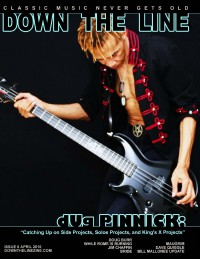

Down The Line
Apr 2010, #6
| Cover |
|---|
|  |
 Online Exclusively Online Exclusively |
| Writers in this Issue |
| Crosslin, Matt Lory, Josh Ruff, Steve |
Doug Pinnick
Cover Feature:- "dUg catches us up..." by Steve Ruff
- "Faith, Family, and the Christ-Haunted South" by Steve Ruff
- "The Mix and The Music" by Steve RuffWhile Rome is Burning, Rick McDonough interviewed
- "Pounding the Skins" by Josh LoryJim Chaffin interviewed; The Crucified, Once Dead
- "Bombs Away!" by Josh LoryDale Thompson interviewed; Bride
- "The Dark Ambient Aim" by Steve Ruff
- "Eternal Sunrise, Eternal Sunset, Eternal Dawn & Gloaming" by Steve Ruff
- "Integrity, Dedication, & Tradition" by Steve Ruff
- Doug Pinnick - Strum Sum Up by Steve Ruff
- Lifesavers Underground - PTSD by Steve Ruff
- Doug Burr - The Shawl by Matt Crosslin
- While Rome is Burning - While Rome is Burning by Steve Ruff
- Bride - Tsar Bomba by Josh Lory
- The Wayside - Spiritual Songs by Matt Crosslin
- L.S. Underground - The Grape Prophet by Steve Ruff
- Gasoline Heart - Nostalgia Ain't What It Used to Be by Josh Lory
- War of Ages - War of Ages by Steve Ruff
- Vigilantes of Love - Live at Eddies by Steve Ruff
- Map - Speechless by Matt Crosslin
- The Langley Sisters - Queen Bee 7" by Matt Crosslin
Relevant Links
Official web site of Down The LineIssue Repository @ the Internet Archive
This issue is available exclusively online.
© 2011 CMnexus. Last updated May 2025. Contact: editor -AT- cmnexus -DØT- org